万音
不是普通声音，而是宇宙本身的频率。它穿透物质、意识与历史，旧神曾经用肉身把它过滤成神力。
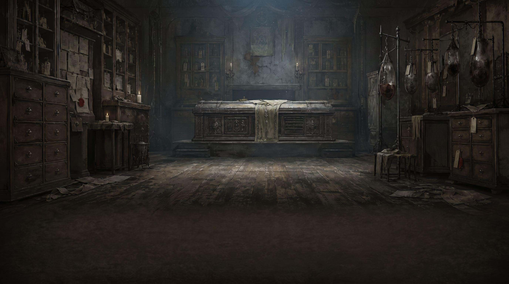
Vertical Slice Concept Showcase
Apostles of God-Ash
一款叙事驱动的暗黑奇幻角色扮演游戏，以骰子判定推进战斗与选择
你醒了。很好，这具身体还没有拒绝你。
宇宙像一件巨大的乐器，持续释放某种频率的声音。旧神曾经用自己的身体过滤这种“万音”，从中获得神力，再把神力转化为统治世界的神权。
直到某一天，宇宙产生了自我意识。理性取代未知的最初时刻，带来的不是秩序，而是频率的崩乱。旧神承载不住变化的万音，一个接一个爆裂，只留下残躯继续影响世界。
不是普通声音，而是宇宙本身的频率。它穿透物质、意识与历史，旧神曾经用肉身把它过滤成神力。
宇宙拥有自我意识后，频率从稳定变成崩乱。旧神的身体无法继续过滤万音，于是神权的表面稳定在一瞬间炸裂。
旧神没有真正消失。胃、眼、骨、舌仍留在世间，并把各自代表的欲望、权力与恐惧改写成新的地貌。
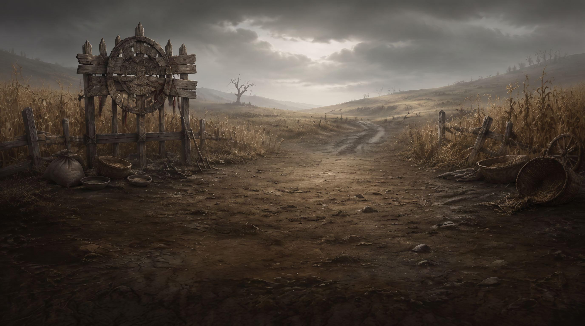
Low Whispering Field
第一章发生在旧神之胃影响后的低语田野。胃代表贪婪、食欲和吞噬，所以这片田地不再是生产粮食的地方，而是吞噬人类的器官。
谷仓王曾是人类英雄。他打开低语田野的粮仓，把自己献祭给田野，想换取粮食救下百姓。但献祭没有终止饥饿，反而让他成为田野的收割代表。
Characters
被献祭的人相信只要自己进入田野，粮仓就会再次打开。于是他们一个接一个来了，最后只留下空碗和等待。
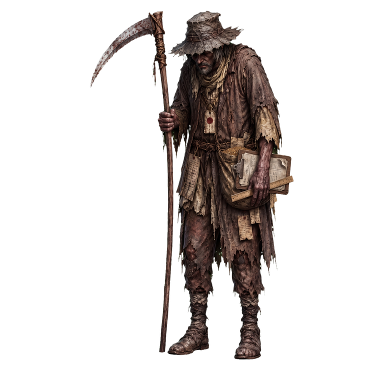
他不觉得自己在杀人，只觉得播种、巡田、收割、登记，总要有人继续做完。制度需要一双手，他就是那双手。
它不是恐怖本身，而是田野留下的警告。它守在边界，提醒所有人：逃出去的人迟早会被饥饿带回来。
屠龙的英雄最后成了恶龙。他曾献出自己拯救饥民，如今却替田野收割更多百姓。
Combat System
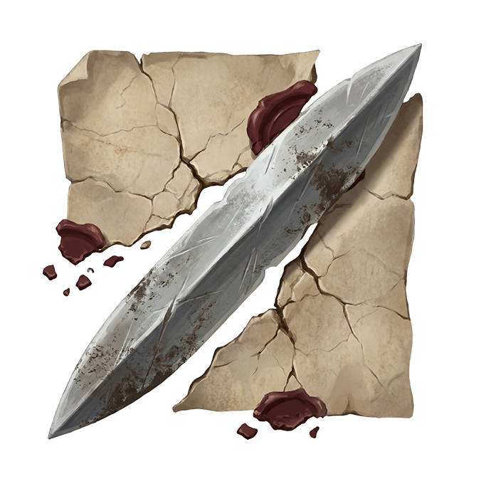
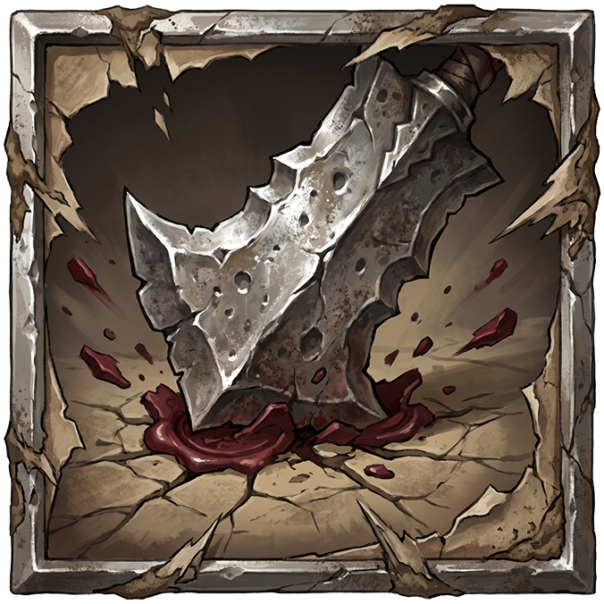
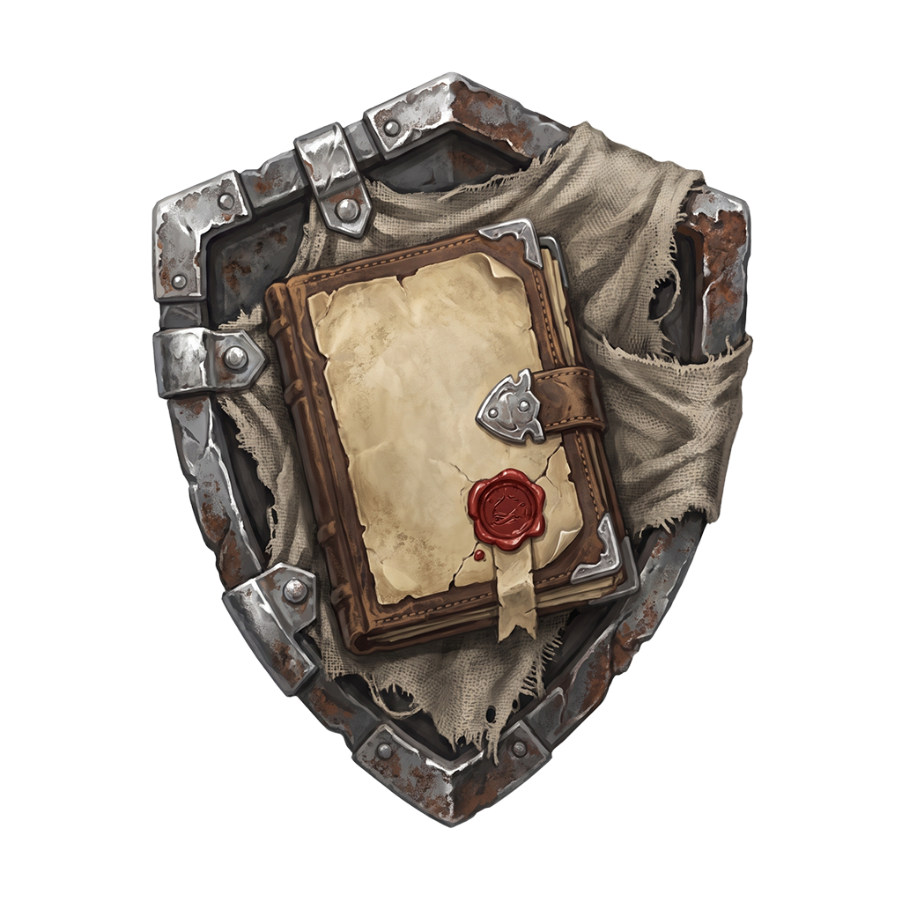
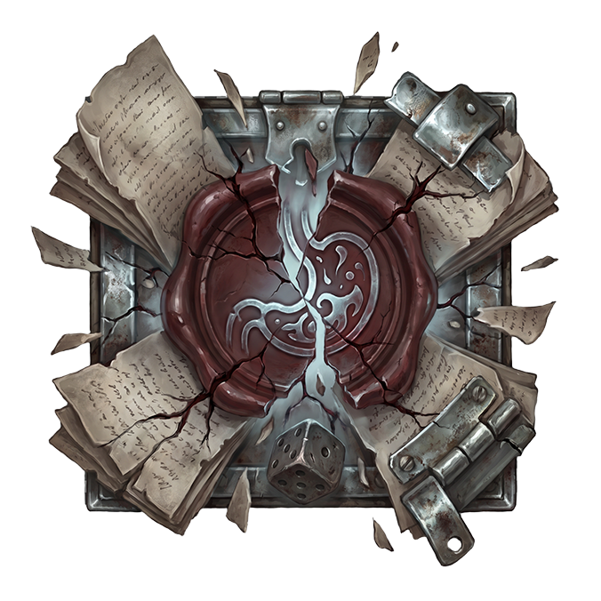
攻击与重击主动发起判定；蓄防会让下一次防御投两次 D20 取高，并在成功时反弹伤害；攻击累计三次后，大招投 D6 直伤，无视防御。
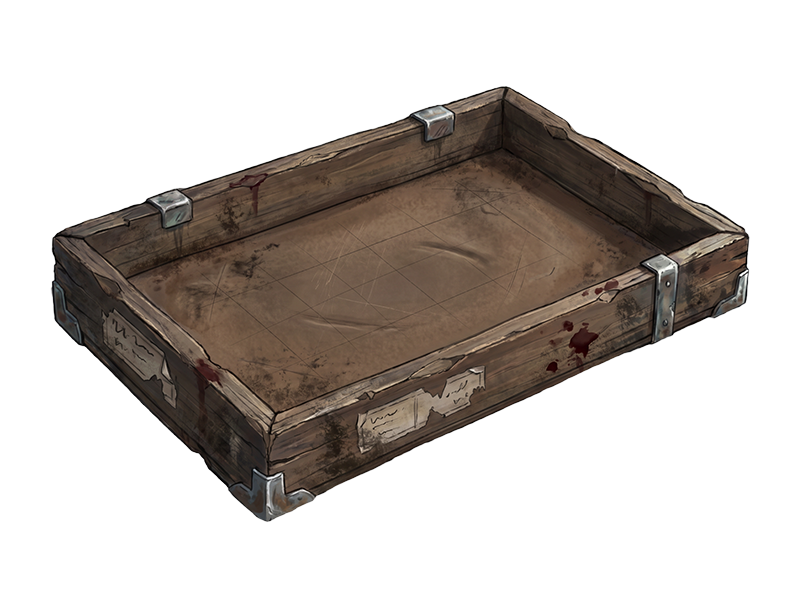
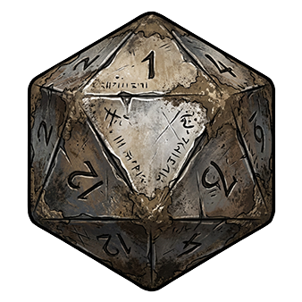
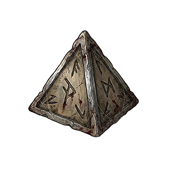
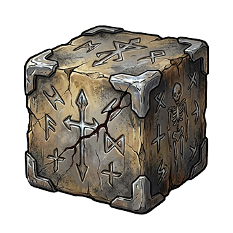
D20 决定命中与防御，D3 决定伤害或加成，D6 留给灰烛判决。结果不是桌游趣味，而是归档、证明和代价。
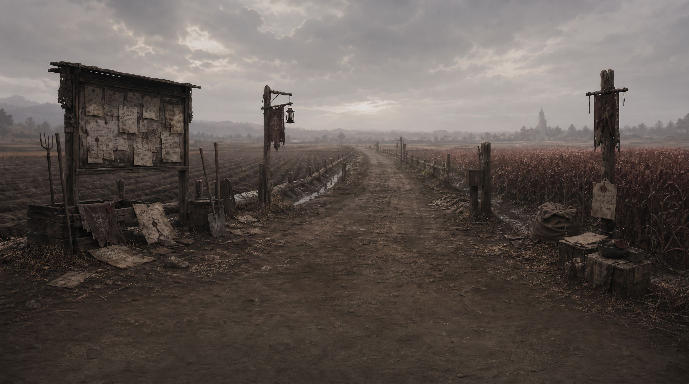
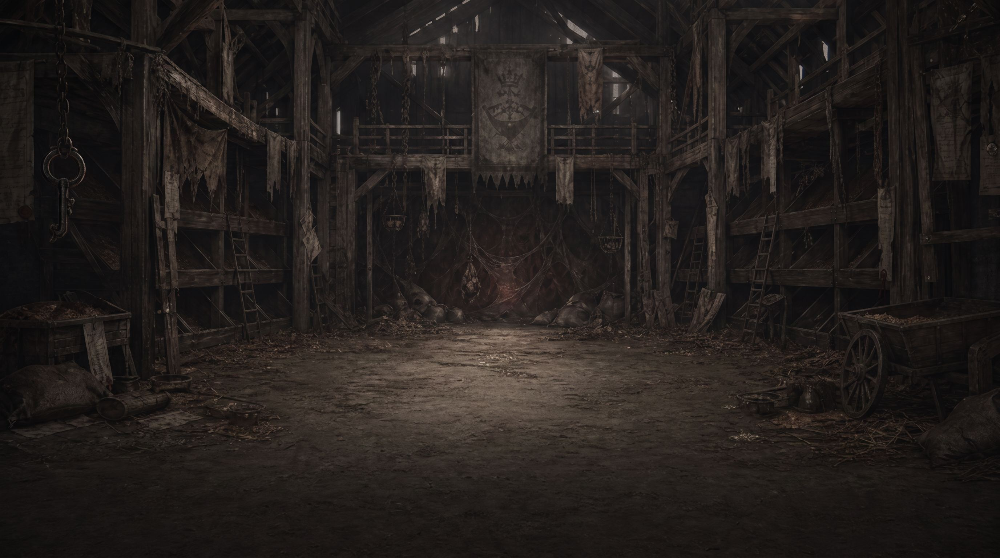
Questions
这不是一套单纯解释设定的世界观。它更像一组被玩法反复追问的命题：稳定从哪里来，理性为什么先制造混乱，英雄怎样被制度吞掉，而吸收神明残躯的主角又还能否保持自己。
旧神过滤万音，世界看似稳定。但这种稳定建立在身体、牺牲和垄断之上。
宇宙从未知走向有知，频率却先崩乱。启蒙不是立即带来秩序，而是先暴露旧秩序的脆弱。
谷仓王献祭自己救人，却被田野改写成收割者。善意被制度吸收后，也可能变成暴力。
主角用“无音”收纳“万音”，把神的胃囊吸收到身体里。力量进入身体之后，自我边界也开始动摇。
Classroom Route
Credits
华东师范大学戏剧与影视硕士：刘秉昂
华东师范大学新闻与传播硕士：金荣俊
华东师范大学戏剧与影视硕士：孙慧
这是一个关于旧神、饥饿、人格、残骸、三位研究生和一个代码劳动力试图按时做出游戏的项目。
如果你在低语田野里听见土地说话，别回头！
大概率是 Boss 机制，也可能是策划又加需求了……